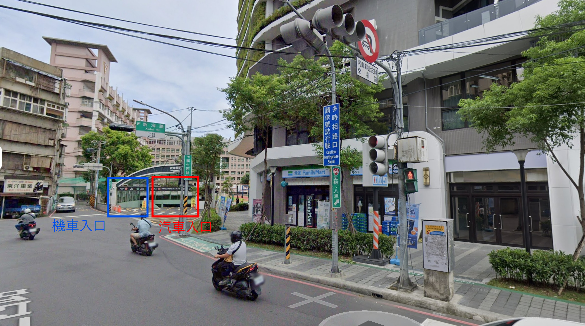

1
交通指引
駕車/騎車方案 (後門進出)
需最晚於前一天提供車號申請車輛停放，不然會被鎖車或柵欄擋住。
1. 學校正門不開放車輛進出
2. 地下停車場入口位於後門（漢生西路與新海路交叉口）。
導航建議定位
「新北市板橋區漢生西路 128 號」
進入方式
抵達定位點後再直行一些些便可抵達停車場入口，進入停車場後有位置都可以停放。

後門入口街景圖：左側為機車入口，右側為汽車入口
大眾運輸方案 (正門進出)
校網交通說明
搭捷運
板橋站 1 號出口，往郵局方向步行約 10 分鐘。順車流行進方向走，到 NET 前就要右轉，步行約 5 分鐘內即可到達。
搭公車
「致理科技大學」站下車。若下車點在台銀/富邦側，請往星巴克方向走斑馬線到對面，到 NET 前就要右轉。
2
資源教室具體位置
和平大樓 5 樓
入校後請直走，找到校內的全家便利商店，從全家門口附近的電梯搭乘至 5 樓。出電梯後往前直走約 40 步，目標位於左手邊自動門處。
校園空間位置參考

校園導覽圖：資源教室位於和平大樓 (D 區) 5 樓，左手邊自動門處
3
費用與行政資料
費用標準
職涯諮詢/ITP會議
諮詢費/出席費
2,500 元 / 場次
各式講座/活動
鐘點費
2,000 元 / 小時
職能培力/評估/體驗
鐘點費
1,000 元 / 小時
4
服務/會議紀錄填寫
115年度職涯諮詢紀錄填寫
職涯輔導服務紀錄
1. 新系統建置中，現行先採用 Google 表單填寫
2. 如為會議記錄或其他評估/觀察報告，將另提供檔案
參考範例
填寫時效要求
- • 連續服務：下一次服務前完成。
- • 單次服務：結束後 3 天內完成。
- • 撥款提醒：月底固定核銷，次月中入帳。
重要紀錄規範
紀錄須包含談話/觀察之細節歷程。不能簡單列點！將影響核銷與計畫訪視。